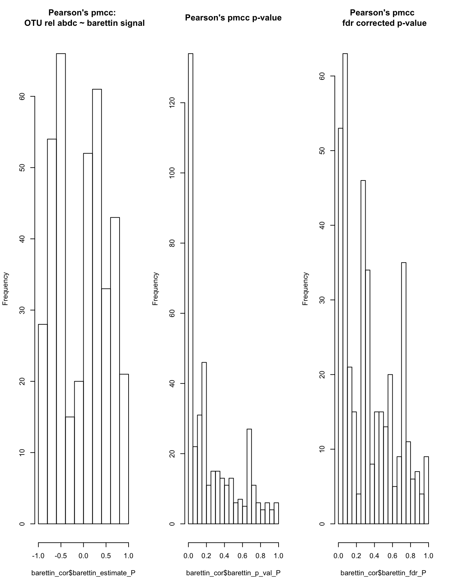
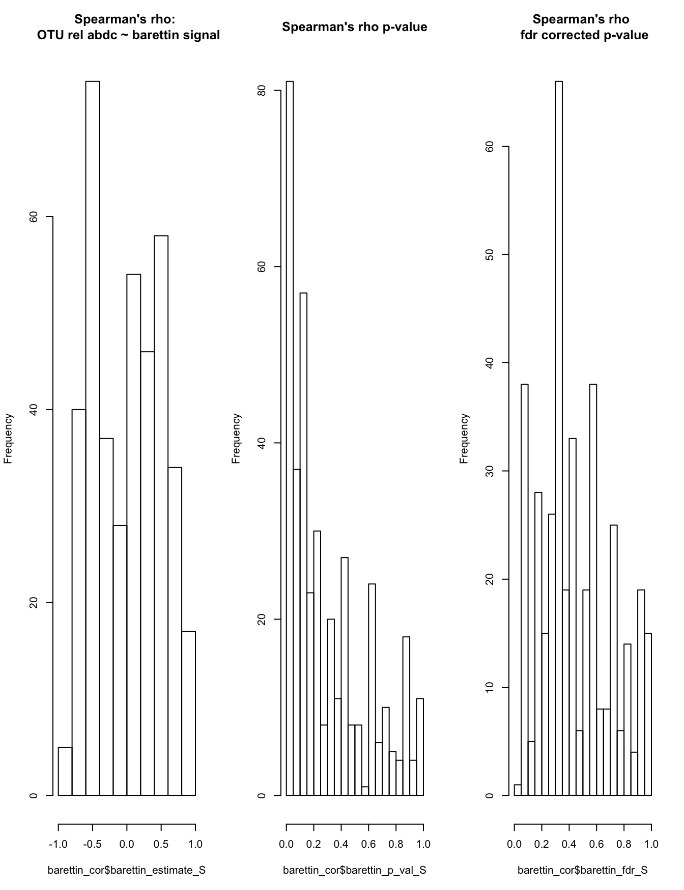

4 Inter-omics
The inter-omics analyses are comprised of three parts. In the first part, we evaluate congruency of the prokaryotic and metabolomic data set as a whole using numerical methods (Mantel test) and ordination (Procrustes rotation and Protest). The second part consists of generating a microbial interaction network and annotating it with depth response of the OTUs and correlation with the barettin signal. In the third part, we rank OTUs based on properties hypothesised to be true forthe producer of barettin.
4.1 Mantel test and procrustes rotations
4.1.1 Libraries and functions
4.1.2 Data sets
# LOAD DATA
micro <- read.csv("data/OTU_all_R.csv", header = T, sep = ";")
colnames(micro)[colnames(micro) == "Sample_ID"] <- "unified_ID"
micro <- micro[order(micro$unified_ID), ]
rownames(micro) <- micro$unified_ID
micro["spec"] <- str_sub(micro$unified_ID, 1, 2)
meta_data <- read.csv("data/PANGAEA_Final.csv", header = T, sep = ";")
masslynx <- meta_data
masslynx <- masslynx[c("unified_ID", "LC.MS.HILIC.positive", "LC.MS.HILIC.negative",
"LC.MS.RP.positive", "LC.MS.RP.negative")]
colnames(masslynx) <- c("unified_ID", "H_p", "H_n", "R_p", "R_n")
masslynx <- na.omit(masslynx)
masslynx["HILIC_pos"] <- str_sub(masslynx$H_p, 1, -3)
masslynx["HILIC_neg"] <- str_sub(masslynx$H_n, 1, -3)
masslynx["RP_pos"] <- str_sub(masslynx$R_p, 1, -3)
masslynx["RP_neg"] <- str_sub(masslynx$R_n, 1, -3)
# load one set of experiments at a time, i.e. CLEANED, ION or PC_GROUPS
### CLEANED
hilic_pos <- read.csv("data/HILIC_pos_20190417_cleaned.csv", header = T, sep = ",")
hilic_neg <- read.csv("data/HILIC_neg_20190421_cleaned.csv", header = T, sep = ",")
rp_pos <- read.csv("data/RP_pos_20190421_cleaned.csv", header = T, sep = ",")
rp_neg <- read.csv("data/RP_neg_20190422_cleaned.csv", header = T, sep = ",")
### ION
hilic_pos <- read.csv("data/HILIC_pos_20190417_cleaned_MH.csv", header = T, sep = ",")
hilic_neg <- read.csv("data/HILIC_neg_20190421_cleaned_MH.csv", header = T, sep = ",")
rp_pos <- read.csv("data/RP_pos_20190421_cleaned_MH.csv", header = T, sep = ",")
rp_neg <- read.csv("data/RP_neg_20190422_cleaned_MH.csv", header = T, sep = ",")
### PC_GROUPS
hilic_pos <- read.csv("data/HILIC_pos_20190417_cleaned_pcgroup.csv", header = T,
sep = ",")
hilic_neg <- read.csv("data/HILIC_neg_20190421_cleaned_pcgroup.csv", header = T,
sep = ",")
rp_pos <- read.csv("data/RP_pos_20190421_cleaned_pcgroup.csv", header = T, sep = ",")
rp_neg <- read.csv("data/RP_neg_20190422_cleaned_pcgroup.csv", header = T, sep = ",")4.1.3 Mantel test code and tabular output
### =============================== MANTEL TEST=================================
# run one of this at a time
metabolomes <- gymnastics(hilic_pos, "H_p")
metabolomes <- gymnastics(hilic_neg, "H_n")
metabolomes <- gymnastics(rp_pos, "R_p")
metabolomes <- gymnastics(rp_neg, "R_n")
# run this
congruent_dfs <- congruency(metabolomes)
# run one of these: MANTEL TEST
diagnostics_hp_cleaned <- cloak(congruent_dfs = congruent_dfs, experiment = "HILIC pos",
filtering = "cleaned")
diagnostics_hn_cleaned <- cloak(congruent_dfs = congruent_dfs, experiment = "HILIC neg",
filtering = "cleaned")
diagnostics_rp_cleaned <- cloak(congruent_dfs = congruent_dfs, experiment = "RP pos",
filtering = "cleaned")
diagnostics_rn_cleaned <- cloak(congruent_dfs = congruent_dfs, experiment = "RP neg",
filtering = "cleaned")
diagnostics_hp_ion <- cloak(congruent_dfs = congruent_dfs, experiment = "HILIC pos",
filtering = "ion")
diagnostics_hn_ion <- cloak(congruent_dfs = congruent_dfs, experiment = "HILIC neg",
filtering = "ion")
diagnostics_rp_ion <- cloak(congruent_dfs = congruent_dfs, experiment = "RP pos",
filtering = "ion")
diagnostics_rn_ion <- cloak(congruent_dfs = congruent_dfs, experiment = "RP neg",
filtering = "ion")
diagnostics_hp_pc_group <- cloak(congruent_dfs = congruent_dfs, experiment = "HILIC pos",
filtering = "pc_group")
diagnostics_hn_pc_group <- cloak(congruent_dfs = congruent_dfs, experiment = "HILIC neg",
filtering = "pc_group")
diagnostics_rp_pc_group <- cloak(congruent_dfs = congruent_dfs, experiment = "RP pos",
filtering = "pc_group")
diagnostics_rn_pc_group <- cloak(congruent_dfs = congruent_dfs, experiment = "RP neg",
filtering = "pc_group")
### Combine all test results into one file
diagnostics <- diagnostics_hp_cleaned
diagnostics <- rbind(diagnostics, diagnostics_hn_cleaned, diagnostics_rp_cleaned,
diagnostics_rn_cleaned, diagnostics_hp_pc_group, diagnostics_hn_pc_group, diagnostics_rp_pc_group,
diagnostics_rn_pc_group, diagnostics_hp_ion, diagnostics_hn_ion, diagnostics_rp_ion,
diagnostics_rn_ion)
diagnostics
write.csv(diagnostics, "mantel_stats_FUN.csv")diagnostics <- read.csv("data/mantel_stats_FUN.csv")
diagnostics$X <- NULL
diagnostics <- diagnostics[, c("statistic", "signif", "micro_samples", "micro_OTUs",
"meta_samples", "meta_features", "Sponge.species", "Experiment", "data.set")]
options(kableExtra.html.bsTable = T)
kable(diagnostics, col.names = c("Mantel statistic r", "significance", "N microbiome samples",
"N OTUs", "N metabolome samples", "N features", "Sponge species", "Experiment",
"data set"), longtable = T, booktabs = T, caption = "Mantel test diagnostics diagnositcs comparing the microbiome and metabolome of the same sponge specimens",
row.names = FALSE) %>% add_header_above(c(Diagnostics = 6, `Data set attribution` = 3)) %>%
kable_styling(bootstrap_options = c("striped", "hover", "bordered", "condensed",
"responsive"), font_size = 12, full_width = F, latex_options = c("striped",
"scale_down"))| Mantel statistic r | significance | N microbiome samples | N OTUs | N metabolome samples | N features | Sponge species | Experiment | data set |
|---|---|---|---|---|---|---|---|---|
| 0.6076416 | 0.004 | 10 | 420 | 10 | 3507 | Geodia barretti | HILIC pos | cleaned |
| 0.3857788 | 0.011 | 13 | 461 | 13 | 3507 | Stryphnus fortis | HILIC pos | cleaned |
| 0.4576405 | 0.008 | 15 | 135 | 15 | 3507 | Weberella bursa | HILIC pos | cleaned |
| 0.4516469 | 0.006 | 10 | 420 | 10 | 2808 | Geodia barretti | HILIC neg | cleaned |
| 0.1513297 | 0.186 | 13 | 461 | 13 | 2808 | Stryphnus fortis | HILIC neg | cleaned |
| 0.1854966 | 0.168 | 15 | 135 | 15 | 2808 | Weberella bursa | HILIC neg | cleaned |
| -0.2014493 | 0.833 | 10 | 420 | 10 | 4673 | Geodia barretti | RP pos | cleaned |
| 0.3127632 | 0.064 | 13 | 461 | 13 | 4673 | Stryphnus fortis | RP pos | cleaned |
| 0.3323657 | 0.035 | 15 | 135 | 15 | 4673 | Weberella bursa | RP pos | cleaned |
| -0.2465894 | 0.845 | 9 | 420 | 9 | 3166 | Geodia barretti | RP neg | cleaned |
| 0.1960950 | 0.173 | 13 | 461 | 13 | 3166 | Stryphnus fortis | RP neg | cleaned |
| 0.1721750 | 0.174 | 15 | 135 | 15 | 3166 | Weberella bursa | RP neg | cleaned |
| 0.5836627 | 0.009 | 10 | 420 | 10 | 2212 | Geodia barretti | HILIC pos | pc_group |
| 0.4082626 | 0.016 | 13 | 461 | 13 | 2212 | Stryphnus fortis | HILIC pos | pc_group |
| 0.4483931 | 0.012 | 15 | 135 | 15 | 2212 | Weberella bursa | HILIC pos | pc_group |
| 0.3951252 | 0.018 | 10 | 420 | 10 | 1351 | Geodia barretti | HILIC neg | pc_group |
| 0.3211093 | 0.040 | 13 | 461 | 13 | 1351 | Stryphnus fortis | HILIC neg | pc_group |
| 0.0315675 | 0.414 | 15 | 135 | 15 | 1351 | Weberella bursa | HILIC neg | pc_group |
| -0.1600791 | 0.774 | 10 | 420 | 10 | 2736 | Geodia barretti | RP pos | pc_group |
| 0.3181249 | 0.064 | 13 | 461 | 13 | 2736 | Stryphnus fortis | RP pos | pc_group |
| 0.3008501 | 0.067 | 15 | 135 | 15 | 2736 | Weberella bursa | RP pos | pc_group |
| -0.1879022 | 0.790 | 9 | 420 | 9 | 1678 | Geodia barretti | RP neg | pc_group |
| 0.2034548 | 0.156 | 13 | 461 | 13 | 1678 | Stryphnus fortis | RP neg | pc_group |
| 0.1507257 | 0.198 | 15 | 135 | 15 | 1678 | Weberella bursa | RP neg | pc_group |
| 0.3351779 | 0.050 | 10 | 420 | 10 | 105 | Geodia barretti | HILIC pos | ion |
| 0.2908357 | 0.086 | 13 | 461 | 13 | 105 | Stryphnus fortis | HILIC pos | ion |
| 0.4683599 | 0.010 | 15 | 135 | 15 | 105 | Weberella bursa | HILIC pos | ion |
| 0.4429513 | 0.005 | 10 | 420 | 10 | 123 | Geodia barretti | HILIC neg | ion |
| 0.0727247 | 0.320 | 13 | 461 | 13 | 123 | Stryphnus fortis | HILIC neg | ion |
| 0.2320236 | 0.115 | 15 | 135 | 15 | 123 | Weberella bursa | HILIC neg | ion |
| -0.2569170 | 0.908 | 10 | 420 | 10 | 171 | Geodia barretti | RP pos | ion |
| 0.3070980 | 0.083 | 13 | 461 | 13 | 171 | Stryphnus fortis | RP pos | ion |
| 0.2656853 | 0.072 | 15 | 135 | 15 | 171 | Weberella bursa | RP pos | ion |
| -0.1220077 | 0.703 | 9 | 420 | 9 | 105 | Geodia barretti | RP neg | ion |
| -0.0505950 | 0.597 | 13 | 461 | 13 | 105 | Stryphnus fortis | RP neg | ion |
| 0.1218225 | 0.217 | 15 | 135 | 15 | 105 | Weberella bursa | RP neg | ion |
dig <- diagnostics[diagnostics$signif <= 0.05, ]
a <- aggregate(dig, by = list(dig$Sponge.species, dig$Experiment, dig$data.set),
FUN = "length")
summary(a$Group.1)## Geodia barretti Stryphnus fortis Weberella bursa
## 6 3 4## HILIC neg HILIC pos RP neg RP pos
## 4 8 0 1## cleaned ion pc_group
## 5 3 5rm(diagnostics_hp_cleaned, diagnostics_hn_cleaned, diagnostics_rp_cleaned, diagnostics_rn_cleaned,
diagnostics_hp_ion, diagnostics_hn_ion, diagnostics_rp_ion, diagnostics_rn_ion,
diagnostics_hp_pc_group, diagnostics_hn_pc_group, diagnostics_rp_pc_group, diagnostics_rn_pc_group)
rm(hilic_pos, hilic_neg, rp_pos, rp_neg)As we can see from the table, in 13 cases, the Mantel test returns a significant correlation between the two matrices. Above you can see the the significant tests broken down by sponge species, HPCL-experiment and filtering approach.
4.1.4 Procrustes rotation and protest code and tabular output
### =============================== PROTEST ====================================
# run one of this at a time
metabolomes <- gymnastics(hilic_pos, "H_p")
metabolomes <- gymnastics(hilic_neg, "H_n")
metabolomes <- gymnastics(rp_pos, "R_p")
metabolomes <- gymnastics(rp_neg, "R_n")
# run this
congruent_dfs <- congruency(metabolomes)
# run one of these: PROTEST TEST
diagnostics_hp_cleaned <- ordination(congruent_dfs = congruent_dfs, experiment = "HILIC pos",
filtering = "cleaned")
diagnostics_hn_cleaned <- ordination(congruent_dfs = congruent_dfs, experiment = "HILIC neg",
filtering = "cleaned")
diagnostics_rp_cleaned <- ordination(congruent_dfs = congruent_dfs, experiment = "RP pos",
filtering = "cleaned")
diagnostics_rn_cleaned <- ordination(congruent_dfs = congruent_dfs, experiment = "RP neg",
filtering = "cleaned")
diagnostics_hp_ion <- ordination(congruent_dfs = congruent_dfs, experiment = "HILIC pos",
filtering = "ion")
diagnostics_hn_ion <- ordination(congruent_dfs = congruent_dfs, experiment = "HILIC neg",
filtering = "ion")
diagnostics_rp_ion <- ordination(congruent_dfs = congruent_dfs, experiment = "RP pos",
filtering = "ion")
diagnostics_rn_ion <- ordination(congruent_dfs = congruent_dfs, experiment = "RP neg",
filtering = "ion")
diagnostics_hp_pc_group <- ordination(congruent_dfs = congruent_dfs, experiment = "HILIC pos",
filtering = "pc_group")
diagnostics_hn_pc_group <- ordination(congruent_dfs = congruent_dfs, experiment = "HILIC neg",
filtering = "pc_group")
diagnostics_rp_pc_group <- ordination(congruent_dfs = congruent_dfs, experiment = "RP pos",
filtering = "pc_group")
diagnostics_rn_pc_group <- ordination(congruent_dfs = congruent_dfs, experiment = "RP neg",
filtering = "pc_group")
### Combine all test results into one file
diagnostics <- diagnostics_hp_cleaned
diagnostics <- rbind(diagnostics, diagnostics_hn_cleaned, diagnostics_rp_cleaned,
diagnostics_rn_cleaned, diagnostics_hp_pc_group, diagnostics_hn_pc_group, diagnostics_rp_pc_group,
diagnostics_rn_pc_group, diagnostics_hp_ion, diagnostics_hn_ion, diagnostics_rp_ion,
diagnostics_rn_ion)
diagnostics
write.csv(diagnostics, "protest_stats_FUN.csv")
rm(diagnostics_hp_cleaned, diagnostics_hn_cleaned, diagnostics_rp_cleaned, diagnostics_rn_cleaned,
diagnostics_hp_ion, diagnostics_hn_ion, diagnostics_rp_ion, diagnostics_rn_ion,
diagnostics_hp_pc_group, diagnostics_hn_pc_group, diagnostics_rp_pc_group, diagnostics_rn_pc_group,
diagnostics)
rm(hilic_pos, hilic_neg, rp_pos, rp_neg)diagnostics <- read.csv("data/protest_stats_FUN.csv")
diagnostics$X <- NULL
diagnostics <- diagnostics[, c("Procrustes.SS", "correlation.in.sym..rotation", "signif",
"micro_samples", "micro_OTUs", "meta_samples", "meta_features", "Sponge.species",
"Experiment", "data.set")]
options(kableExtra.html.bsTable = T)
kable(diagnostics, col.names = c("Procrustes sum of squares", "correlation in symmetric rotation",
"significance", "N microbiome samples", "N OTUs", "N metabolome samples", "N features",
"Sponge species", "Experiment", "data set"), longtable = T, booktabs = T, caption = "Protest diagnostics comparing the microbiome and metabolome of the same sponge specimens",
row.names = FALSE) %>% add_header_above(c(Diagnostics = 7, `Data set attribution` = 3)) %>%
kable_styling(bootstrap_options = c("striped", "hover", "bordered", "condensed",
"responsive"), font_size = 12, full_width = F, latex_options = c("striped",
"scale_down"))| Procrustes sum of squares | correlation in symmetric rotation | significance | N microbiome samples | N OTUs | N metabolome samples | N features | Sponge species | Experiment | data set |
|---|---|---|---|---|---|---|---|---|---|
| 0.4901473 | 0.7140397 | 0.009 | 10 | 420 | 10 | 3507 | Geodia barretti | HILIC pos | cleaned |
| 0.3360196 | 0.8148499 | 0.001 | 13 | 461 | 13 | 3507 | Stryphnus fortis | HILIC pos | cleaned |
| 0.6451196 | 0.5957184 | 0.009 | 15 | 135 | 15 | 3507 | Weberella bursa | HILIC pos | cleaned |
| 0.5056719 | 0.7030847 | 0.015 | 10 | 420 | 10 | 2808 | Geodia barretti | HILIC neg | cleaned |
| 0.7144829 | 0.5343380 | 0.043 | 13 | 461 | 13 | 2808 | Stryphnus fortis | HILIC neg | cleaned |
| 0.6454847 | 0.5954119 | 0.003 | 15 | 135 | 15 | 2808 | Weberella bursa | HILIC neg | cleaned |
| 0.7241690 | 0.5251961 | 0.124 | 10 | 420 | 10 | 4673 | Geodia barretti | RP pos | cleaned |
| 0.5535784 | 0.6681479 | 0.005 | 13 | 461 | 13 | 4673 | Stryphnus fortis | RP pos | cleaned |
| 0.9089831 | 0.3016901 | 0.513 | 15 | 135 | 15 | 4673 | Weberella bursa | RP pos | cleaned |
| 0.7744081 | 0.4749652 | 0.229 | 9 | 420 | 9 | 3166 | Geodia barretti | RP neg | cleaned |
| 0.7769037 | 0.4723307 | 0.107 | 13 | 461 | 13 | 3166 | Stryphnus fortis | RP neg | cleaned |
| 0.9426954 | 0.2393838 | 0.656 | 15 | 135 | 15 | 3166 | Weberella bursa | RP neg | cleaned |
| 0.4903060 | 0.7139285 | 0.008 | 10 | 420 | 10 | 2212 | Geodia barretti | HILIC pos | pc_group |
| 0.6122646 | 0.6226840 | 0.009 | 13 | 461 | 13 | 2212 | Stryphnus fortis | HILIC pos | pc_group |
| 0.5611609 | 0.6624494 | 0.002 | 15 | 135 | 15 | 2212 | Weberella bursa | HILIC pos | pc_group |
| 0.4442919 | 0.7454583 | 0.007 | 10 | 420 | 10 | 1351 | Geodia barretti | HILIC neg | pc_group |
| 0.6072203 | 0.6267214 | 0.013 | 13 | 461 | 13 | 1351 | Stryphnus fortis | HILIC neg | pc_group |
| 0.7647882 | 0.4849864 | 0.062 | 15 | 135 | 15 | 1351 | Weberella bursa | HILIC neg | pc_group |
| 0.7332277 | 0.5165001 | 0.146 | 10 | 420 | 10 | 2736 | Geodia barretti | RP pos | pc_group |
| 0.5557670 | 0.6665081 | 0.002 | 13 | 461 | 13 | 2736 | Stryphnus fortis | RP pos | pc_group |
| 0.9184545 | 0.2855616 | 0.579 | 15 | 135 | 15 | 2736 | Weberella bursa | RP pos | pc_group |
| 0.7952845 | 0.4524550 | 0.314 | 9 | 420 | 9 | 1678 | Geodia barretti | RP neg | pc_group |
| 0.7513407 | 0.4986575 | 0.089 | 13 | 461 | 13 | 1678 | Stryphnus fortis | RP neg | pc_group |
| 0.9669093 | 0.1819085 | 0.851 | 15 | 135 | 15 | 1678 | Weberella bursa | RP neg | pc_group |
| 0.7744285 | 0.4749437 | 0.254 | 9 | 420 | 9 | 3166 | Geodia barretti | HILIC pos | ion |
| 0.7768298 | 0.4724090 | 0.119 | 13 | 461 | 13 | 3166 | Stryphnus fortis | HILIC pos | ion |
| 0.9427350 | 0.2393010 | 0.671 | 15 | 135 | 15 | 3166 | Weberella bursa | HILIC pos | ion |
| 0.3977778 | 0.7760297 | 0.005 | 10 | 420 | 10 | 123 | Geodia barretti | HILIC neg | ion |
| 0.7620196 | 0.4878323 | 0.101 | 13 | 461 | 13 | 123 | Stryphnus fortis | HILIC neg | ion |
| 0.6263664 | 0.6112558 | 0.007 | 15 | 135 | 15 | 123 | Weberella bursa | HILIC neg | ion |
| 0.6879735 | 0.5585933 | 0.083 | 10 | 420 | 10 | 171 | Geodia barretti | RP pos | ion |
| 0.6735153 | 0.5713884 | 0.038 | 13 | 461 | 13 | 171 | Stryphnus fortis | RP pos | ion |
| 0.9830213 | 0.1303022 | 0.961 | 15 | 135 | 15 | 171 | Weberella bursa | RP pos | ion |
| 0.7788793 | 0.4702347 | 0.271 | 9 | 420 | 9 | 105 | Geodia barretti | RP neg | ion |
| 0.9754054 | 0.1568265 | 0.767 | 13 | 461 | 13 | 105 | Stryphnus fortis | RP neg | ion |
| 0.9595716 | 0.2010681 | 0.791 | 15 | 135 | 15 | 105 | Weberella bursa | RP neg | ion |
dig <- diagnostics[diagnostics$signif <= 0.05, ]
a <- aggregate(dig, by = list(dig$Sponge.species, dig$Experiment, dig$data.set),
FUN = "length")
summary(a$Group.1)## Geodia barretti Stryphnus fortis Weberella bursa
## 5 7 4## HILIC neg HILIC pos RP neg RP pos
## 7 6 0 3## cleaned ion pc_group
## 7 3 6Out of the 36 tests performed, 16 are significant (p \(\leq\) 0.05). Immediately above you can see the the significant tests broken down by sponge species, HPCL-experiment and filtering approach.
4.2 Correlating barettin and prokaryotic relative abundance
cmp <- read.csv("data/metabolite_master_20190605.csv", header = T, sep = ",")
cmp$X <- NULL
meta_data <- read.csv("data/Steffen_et_al_metadata_PANGAEA.csv", header = T, sep = ";")
micro <- read.csv("data/OTU_all_R.csv", header = T, sep = ";")
# preparing meta data
meta_data_prep <- function(meta_data) {
meta_data <- meta_data[, c("unified_ID", "Depth", "Latitude", "Longitude", "MeanBottomTemp_Cdeg",
"MeanBotSalinity_PSU", "YEAR")]
colnames(meta_data) <- c("unified_ID", "Depth", "Latitude", "Longitude", "Temperature",
"Salinity", "Year")
meta_data <- meta_data[!(str_sub(meta_data$unified_ID, 1, 2) == "QC"), ]
meta_data[] <- lapply(meta_data, function(x) if (is.factor(x))
factor(x) else x)
# Gb12, Gb20 and Gb21 are missing temperature and salinity. Imputing data from
# closeby samples:
meta_data$Salinity[meta_data$unified_ID == "Gb12"] <- 34.92
meta_data$Salinity[meta_data$unified_ID == "Gb20"] <- 34.92
meta_data$Salinity[meta_data$unified_ID == "Gb21"] <- 34.56
meta_data$Temperature[meta_data$unified_ID == "Gb12"] <- 3.71
meta_data$Temperature[meta_data$unified_ID == "Gb20"] <- 3.65
meta_data$Temperature[meta_data$unified_ID == "Gb21"] <- 2.32
meta_data["spec"] <- str_sub(meta_data$unified_ID, 1, 2)
meta_data <- meta_data[order(meta_data$unified_ID), ]
return(meta_data)
}
meta_data <- meta_data_prep(meta_data)
# separating OTU tables by sponge
OTU_prep_sqrt <- function(micro) {
rownames(micro) <- micro$Sample_ID
micro$Sample_ID <- NULL
# micro <- sqrt(micro) #sqrt could be toggled on/off here
micro_gb <- micro[(str_sub(rownames(micro), 1, 2) == "Gb"), ]
micro_sf <- micro[(str_sub(rownames(micro), 1, 2) == "Sf"), ]
micro_wb <- micro[(str_sub(rownames(micro), 1, 2) == "Wb"), ]
micro_gb <- micro_gb[, colSums(micro_gb != 0) > 0]
micro_sf <- micro_sf[, colSums(micro_sf != 0) > 0]
micro_wb <- micro_wb[, colSums(micro_wb != 0) > 0]
micros <- list(gb = micro_gb, sf = micro_sf, wb = micro_wb)
return(micros)
}
micro_ds <- OTU_prep_sqrt(micro)
# calculating overall relative abundance of each OTU per sample
overall_rabdc <- function(micros) {
mic <- micros
n <- 0
k <- dim(mic)[1]
mic["rowsum"] <- apply(mic, 1, sum)
while (n < k) {
n <- n + 1
mic[n, ] <- mic[n, ]/(mic$rowsum[n])
}
mic$rowsum <- NULL
mic <- data.frame(t(mic))
# mic['avg_rel_abdc'] <- apply(mic, 1, mean) mic['occurrence'] <-
# ifelse(mic$avg>0.0025, 'common', 'rare')
return(mic)
}
rabdc <- lapply(micro_ds, overall_rabdc)
# preparing congruent data sets
common_samples <- intersect(colnames(rabdc$gb), cmp$unified_ID)
rabdc <- rabdc$gb[, colnames(rabdc$gb) %in% common_samples]
rabdc <- data.frame(t(rabdc))
cmp <- cmp[cmp$unified_ID %in% common_samples, ]
cmp[] <- lapply(cmp, function(x) if (is.factor(x)) factor(x) else x)
cmp <- cmp[order((cmp$unified_ID)), ]
# all(rownames(rabdc)==cmp$unified_ID)
# CORRELATION for Gb and Sf
bar_cor <- function(rabdc_df, cmp) {
barettin <- data.frame(colnames(rabdc_df))
colnames(barettin) <- "XOTU"
barettin["barettin_estimate_P"] <- NA
barettin["barettin_p_val_P"] <- NA
barettin["barettin_estimate_S"] <- NA
barettin["barettin_p_val_S"] <- NA
n <- 0
k <- dim(barettin)[1]
while (n < k) {
n <- n + 1
barettin$barettin_estimate_P[n] <- cor.test(as.numeric(rabdc_df[, n]), cmp$bar,
method = "pearson")$estimate
barettin$barettin_p_val_P[n] <- cor.test(as.numeric(rabdc_df[, n]), cmp$bar,
method = "pearson")$p.value
barettin$barettin_estimate_S[n] <- cor.test(as.numeric(rabdc_df[, n]), cmp$bar,
method = "spearman")$estimate
barettin$barettin_p_val_S[n] <- cor.test(as.numeric(rabdc_df[, n]), cmp$bar,
method = "spearman")$p.value
}
barettin["barettin_fdr_P"] <- NA
barettin["barettin_fdr_S"] <- NA
barettin$barettin_fdr_P <- p.adjust(barettin$barettin_p_val_P, method = "fdr")
barettin$barettin_fdr_S <- p.adjust(barettin$barettin_p_val_S, method = "fdr")
return(barettin)
}
barettin_cor <- bar_cor(rabdc, cmp)
# write.csv(barettin_cor, 'data/GB_OTU_barettin_correlation.csv', row.names = F)
par(mfrow = c(1, 3))
hist(barettin_cor$barettin_estimate_P, main = "Pearson's pmcc: \n OTU rel abdc ~ barettin signal",
xlab = "Product moment \n correlation coefficient")
hist(barettin_cor$barettin_p_val_P, breaks = 20, main = "Pearson's pmcc p-value",
xlab = "p-value")
hist(barettin_cor$barettin_fdr_P, breaks = 20, main = "Pearson's pmcc \n fdr corrected p-value",
xlab = "FDR corrected p-value")
par(mfrow = c(1, 1))
par(mfrow = c(1, 3))
hist(barettin_cor$barettin_estimate_S, main = "Spearman's rho: \n OTU rel abdc ~ barettin signal",
xlab = "Rho")
hist(barettin_cor$barettin_p_val_S, breaks = 20, main = "Spearman's rho p-value",
xlab = "p-value")
hist(barettin_cor$barettin_fdr_S, breaks = 20, main = "Spearman's rho \n fdr corrected p-value",
xlab = "FDR corrected p-value")
4.3 Microbial interaction network
4.3.1 Generating network based on different algorithms
The overall goal of the subsequent seqctions of code is to produce a microbial interation network for Geodia barretti. Nodes will be OTUs/ASVs from Geodia barretti samples and edges represent an interaction between those OTUs/ASVs. In this first part, we will employ different algorithms for network building. Network building algorithms are mannifold and their results not uncontroversial, thus the recommended strategy is to use different methods and merge the resulting networks to one consensus representation (Weiss et al., 2016), which we will do in the second part.
The original data set from 14 specimens of Geodia barretti contained 420 OTUs/ASVs. To reduce sparsity, we removed OTUs/ASVs with two or less non-zero values resulting in a data set containing 289 OTUs/ASVs. This data set was used for network inference with the following methods:
- MENA Pipeline
- fastLSA
- SparCC
- Maximal information coefficient MIC
4.3.1.1 Molecular Ecological Network Analysis (MENA) Pipeline
The implementation of MENA (Deng et al., 2012; Zhou, Deng et al., 2010; Zhou, Deng et al.,2011) can be accessed at http://ieg4.rccc.ou.edu/mena. The data set was saved as tab separated values and all zeros were converted to blanks. No further filtering for non-zero values was done (more than two non-zero values). For data preparation, default settings were applied, i.e. missing data was only filled with 0.01 in blanks with paired valid values, logarithm was taken, Pearson correlation coefficient was selected. Likewise, Random matrix theory settings were kept at defaults, decreasing the cutoff from the top using Regress Poisson distribution only. The cutoff of 0.800 was chosen for the similarity matrix to construct the network, corresponding to a Chi-square test on Poisson distribution of 99.191 and a p-value of 0.001. This resulted in a network with 241 nodes and 3582 edges.
A second analysis was produced with the same settings except building the similarity matrix based on Spearman’s Rho. The cutoff of 0.820 was chosen for the similarity matrix to construct the network, corresponding to a Chi-square test on Poisson distribution of 98.417 and a p-value of 0.001. This resulted in a network with 252 nodes and 2216 edges.
Network properties and parameters are summarized in MENA_network_parameters_Feb2019.xlsx.
4.3.1.2 Local Similarity Analysis: fastLSA
The command line program for calcularing local similarity (Durno et al., 2013) was downloaded from http://hallam.microbiology.ubc.ca/fastLSA/install/index.html and run specifying the input file, no time lag (-d 0) and significance level alpha (-a 0.05). All other paramters were kept at their default values. The input data set was a tab delimited text file stripped of OTU labels or sample IDs.
The output file, as specified on the website, containes five columns. ‘index1’ and ‘index2’ represent the significant paired indices ranging from 0 to n-1 (OTUs/ASVs). LSA denotes the LSA statistic of each pair, lag was set to 0 with the -d flag and the p-valueBound column provides the p-value’s upper boundary for the significantly paired p-value.
To produce comparable data sets, we replaced the indices with their OTU IDs and removed superfluous columns.
fastLSA <- read.csv("data/gb_289_feb2019.out", header = T, sep = "")
key <- read.csv("data/fastLSA_index_otu_CORRECTEDfeb2019.csv", header = T, sep = ";")
fastLSA$index1_otu <- key$fastLSA_OTU[match(fastLSA$index1, key$fastLSA_index)]
fastLSA$index2_otu <- key$fastLSA_OTU[match(fastLSA$index2, key$fastLSA_index)]
fastLSA$index1 <- NULL
fastLSA$index2 <- NULL
fastLSA$lag <- NULL
fastLSA$X <- NULL
fastLSA <- fastLSA[, c(3, 4, 1, 2)]
fastLSA <- fastLSA[order(fastLSA$p.valueBound), ]
# write.csv(fastLSA, 'fastLSA_for_networks.csv')
rm(key)LSA scores range from -1 for strong negatively correlations to 1, for strong positive correlations. There were no negative correlations in this data setand we refrained from scaleding the LSA score furhter. The resulting network contrained 129 nodes and 207 edges.
4.3.1.3 SparCC
SparCC (Friedman and Alm, 2012) is a network building algorithm for compositional data and can be found at https://bitbucket.org/yonatanf/sparcc.
Prior to running it I had to get help as there was a minor issue during compilation. SparCC needed specific versions of numpy, panda and python to run properly, which is easiest accomodated in a specific environment. The OTU table needs to be windows formatted text. The embedded code is an example, for the analysis, 500 iterations were combined.
$ cd to working directory with SparCC and the data set gb_289.csv
$ source activate sparcc
python SparCC.py ../gb_sparcc.txt -c ../gb_sparcc_cor_file.txt -v
../gb_sparcc_coverage_file.txt -i 5
$ deactivateCreate a results directory and redirect all the output there. Pseudo p-value Calculation, generates -n shuffled data sets:
$ mkdir results #creates output directory
$ python MakeBootstraps.py ../gb_sparcc.txt -n 5 -t permutation_#.txt -p ../results/ And run SparCC.py on all the re-shuffled data sets:
$ python SparCC.py ../results/permutation_0.txt -i 5 --cor_file=../results/perm_cor_0.txt
$ python SparCC.py ../results/permutation_1.txt -i 5 --cor_file=../results/perm_cor_1.txt
$ python SparCC.py ../results/permutation_2.txt -i 5 --cor_file=../results/perm_cor_2.txt
$ python SparCC.py ../results/permutation_3.txt -i 5 --cor_file=../results/perm_cor_3.txt
$ python SparCC.py ../results/permutation_4.txt -i 5 --cor_file=../results/perm_cor_4.txtGenerate p-values:
$ python PseudoPvals.py ../results/gb_sparcc_cor_file.txt ../results/perm_cor_#.txt 5
-o ../results/pvals.two_sided.txt -t two_sidedFormatting the resulting data set like so:
library(reshape2)
cor_file <- read.csv("data/gb_sparcc_cor_file_289.csv", header = T, sep = ";")
p_vals <- read.csv("data/gb_289_pvals.two_sided.csv", header = T, sep = ";")
# make OTU ID the rowname
rownames(cor_file) <- cor_file[, 1]
cor_file[, 1] <- NULL
rownames(p_vals) <- p_vals[, 1]
p_vals[, 1] <- NULL
# check ds congruency
all(colnames(cor_file) == rownames(cor_file))
all(colnames(p_vals) == rownames(p_vals))
# melt into long format, all vs all comparison: 289^2=83521 rows
cor_file_m <- melt(as.matrix(cor_file))
p_vals_m <- melt(as.matrix(p_vals))
all(cor_file_m$Var1 == p_vals_m$Var1)
all(cor_file_m$Var2 == p_vals_m$Var2)
# complete data set with p_vals and 'correlation coeff'
cor_file_m["p_vals"] <- p_vals_m$value
# This removes AB - BA duplicates but still contains self comprisons, AA, BB,CC
# etc.
cols <- c("Var1", "Var2")
newdf <- cor_file_m[, cols] #generate new data set with just those two
# a <- Sys.time()
for (i in 1:nrow(cor_file_m)) {
newdf[i, ] = sort(cor_file_m[i, cols])
}
# b <- Sys.time() b-a
cor_file_shortened <- cor_file_m[!duplicated(newdf), ] #and can be removed with duplicate
cor_file_shortened <- cor_file_shortened[which(cor_file_shortened$Var1 != cor_file_shortened$Var2),
] # removing self comparison
colnames(cor_file_shortened) <- c("Var1_SparCC", "Var2_SparCC", "SparCC", "pSparCC") #41616
write.csv(cor_file_shortened, "data/SparCC_for_networks.csv")
rm(cor_file_m, newdf, p_vals_m, i, cols)4.3.1.4 Maximal information coefficient MIC
MIC for pairwise interaction was calculated with the R package minearva. The MIC is part of a statistic called Maximal Information-Based Nonparametric Exploration (MINE).
library(minerva)
OTU <- read.csv("data/gb_289.csv", header = T, sep = ";")
rownames(OTU) <- OTU[, 1]
OTU[, 1] <- NULL
OTU <- as.data.frame(t(OTU))
# Calculate MIC of original data set.
MINE <- mine(OTU)
MIC <- MINE$MIC #dim(MIC): 289 289Obtaining p-values for this statistic can be achieved by permutation of the original OTU table as below or empirically, by selecting the thousand strongest interactions.
# 10 needs to be replaced with 1000 for final version, three times!!!
# reshuffling the OTU table, saving the MIC to a list, a total of 1000 times
n <- 0
results <- list()
# For reproducibility, one could e.g.: set.seed(1984)
# c <- Sys.time()
while (n < 1000) {
n <- n + 1
mock <- apply(OTU, MARGIN = 2, sample)
mock_mine <- mine(mock)
results[[n]] <- mock_mine$MIC
}
# d <- Sys.time() d-c
# for every element of the true matrix, go through all the same elements in the
# 1000 generated mock matrix MIC indices and count how many of those are greater.
MIC <- MINE$MIC
e_values <- matrix(nrow = nrow(MIC), ncol = ncol(MIC), data = 0)
for (i in 1:nrow(MIC)) {
for (j in 1:ncol(MIC)) {
n <- 0
while (n < 1000) {
n <- n + 1
if (results[[n]][i, j] >= MIC[i, j]) {
e_values[i, j] <- e_values[i, j] + 1
}
}
}
}
e_values <- e_values/1000
# write.csv(e_values, 'data/MIC_e_values.csv')For n=1000, the first part takes about 8 mins on one core, the second part about 2 min. The relevant output is saved in the initial calculations of the MIC and the corresponding e-values are in e_values. These are symmetric matrices that will be reduced to a long table with unique OTUs/ASVs pairs, their MIC and the e-value. For clarity, all other files are removed.
rm(MINE, mock, mock_mine, results)
# transforming symmetric matrix to unique-pair long format
cor_file <- data.frame(MIC)
p_vals <- data.frame(e_values)
# inspect the files, adapt them and test congruency
rownames(p_vals) <- rownames(cor_file)
colnames(p_vals) <- colnames(cor_file)
all(colnames(cor_file) == rownames(cor_file))
# melt into long format, all vs all comparison: 289*289=83521 rows
cor_file_m <- melt(as.matrix(cor_file))
all(colnames(p_vals) == rownames(p_vals))
p_vals_m <- melt(as.matrix(p_vals))
# complete data set with p_vals
cor_file_m["p_vals"] <- p_vals_m$value
# This removes AB - BA duplicates but still contains self comprisons, AA, BB,
# etc.
cols <- c("Var1", "Var2")
newdf <- cor_file_m[, cols] #generate new data set with just those two
for (i in 1:nrow(cor_file_m)) {
newdf[i, ] <- sort(cor_file_m[i, cols])
}
cor_file_shortened <- cor_file_m[!duplicated(newdf), ] #and can be removed with duplicate
cor_file_shortened <- cor_file_shortened[which(cor_file_shortened$Var1 != cor_file_shortened$Var2),
] # removing self comparison
rm(cor_file_m, newdf, p_vals_m, i, cols)
# write.csv(cor_file_shortened, 'data/MIC_for_networks.csv')4.3.2 Consolidation of the different networks
4.3.2.1 MIC
MIC allows to detect a variety of interactions. According to the manual of the R wrapper minerva, the resulting MIC score “is related to the relationship strenght and it can be interpreted as a correlation measure. It is symmetric and it ranges in [0,1], where it tends to 0 for statistically independent data and it approaches 1 in probability for noiseless functional relationships”. Thus, it also contains strong negative relationship up to mutual exclusivity, which we want to filter out.
mic <- read.csv("data/MIC_for_networks.csv", header = T, sep = ",")
mic$X <- NULL
colnames(mic) <- c("node1_mic", "node2_mic", "MIC", "pMIC")Initially, the MIC network generated by the R wrapper minerva contained MIC values for all possible edges (i.e. 41616). Of those, 4370 edges/interactions had a p-value \(\leq\) 0.05. As we will only include those edges in the final network, we select those and calculate the linear regression coefficient and p-value for the regression, to test whether we are able to distinguish negative from positive interaction.
# Original OTU table for regressions
OTU <- read.csv("data/gb_289.csv", header = T, sep = ";")
rownames(OTU) <- OTU[, 1]
OTU[, 1] <- NULL
OTU["ID"] <- row.names(OTU)# goal: in mic data frame, set to 'NA' MIC and pMIC of edges with a significant
# p-value for MIC that have a significant negative regression
mic["regression"] <- NA
mic["p_regression"] <- NA
for (i in 1:nrow(mic)) {
bac1 <- factor(mic[i, 1])
bac2 <- factor(mic[i, 2])
temp_ds <- data.frame(t(rbind(OTU[OTU$ID == bac1, ], OTU[OTU$ID == bac2, ])))
temp_ds <- temp_ds[-c(15), ]
temp_ds[] <- lapply(temp_ds, function(x) if (is.factor(x))
factor(x) else x) # removes factors, not sure if necessary
mic$regression[i] <- summary(lm(c(temp_ds[, 1]) ~ c(temp_ds[, 2])))$coefficients[2,
1] #slope
mic$p_regression[i] <- summary(lm(c(temp_ds[, 1]) ~ c(temp_ds[, 2])))$coefficients[2,
4] #p-val
}
before <- sum(mic$pMIC <= 0.05) #4370
mic$MIC <- ifelse((mic$pMIC <= 0.05 & mic$regression < 0 & mic$p_regression <= 0.05),
NA, mic$MIC)
mic$pMIC <- ifelse((mic$pMIC <= 0.05 & mic$regression < 0 & mic$p_regression <= 0.05),
NA, mic$pMIC)
after <- sum(mic$pMIC <= 0.05, na.rm = T) #3522
write.csv(mic, "data/MIC.csv")
rm(temp_ds, bac1, bac2, i, mic)The MIC data set initially contained 41616 edges, 4370 of which were significant prior to the removal of negative correlations and leaving 3522 edges with a p-value \(\leq\) 0.05.
4.3.2.2 SparCC
The next network data set is based on the SparCC algorithm for computing correlations in compositional data.
sparcc <- read.csv("data/SparCC_for_networks.csv", header = T, sep = ",")
sparcc$X <- NULL
colnames(sparcc) <- c("node1_sparcc", "node2_sparcc", "SparCC", "pSparCC")
# hist(sparcc$SparCC) hist(sparcc$pSparCC)
sparcc$pSparCC <- ifelse((sparcc$SparCC < 0), NA, sparcc$pSparCC) #setting the p-values of negative interactions to NA
sparcc$SparCC <- ifelse((sparcc$SparCC < 0), NA, sparcc$SparCC) #setting negative interactions to NAThe network based on the SparCC algorithm contained 41616 edges of which 20420 negative interactions that were removed. 6622 significant positive edges remain.
4.3.2.3 MENA
The next two network data sets are generated by MENA based on random matrix theory.
mena_pcc <- read.csv("data/MENA_0.800_PCC_edge_attribute.txt", header = F, sep = " ")
# 'np' in V2 and -1 in V5 mean negative interaction, these should be removed.
dim(mena_pcc)[1] - dim(mena_pcc[mena_pcc$V5 == -1, ])[1] # Number of pos interactions## [1] 171mena_pcc["pMENA_PCC"] <- ifelse((mena_pcc$V5 < 0), NA, 0.001)
mena_pcc$V2 <- NULL
mena_pcc$V4 <- NULL
mena_pcc$V5 <- NULL
colnames(mena_pcc) <- c("node1_mena", "node2_mena", "pMENA_PCC")
mena_scc <- read.csv("data/MENA_0.820_SCC_edge_attribute.txt", header = F, sep = " ")
dim(mena_scc)[1] - dim(mena_scc[mena_scc$V5 == -1, ])[1] # Number of pos interactions## [1] 317mena_scc["pMENA_SCC"] <- ifelse((mena_scc$V5 < 0), NA, 0.001)
mena_scc$V2 <- NULL
mena_scc$V4 <- NULL
mena_scc$V5 <- NULL
colnames(mena_scc) <- c("node1_mena", "node2_mena", "pMENA_SCC")MENA network with Pearson correlation contained 3582 edges of which 3411 negative interactions were removed. For Spearman correlations, the network contained 2216 edges of which 1899 negative interactions were removed.
4.3.2.4 LSA
The next network data set is based on local similarity. It does not contain any negative values for LSA, so we do not exclude any edges.
lsa <- read.csv("data/fastLSA_for_networks.csv", header = T, sep = ",")
lsa$X <- NULL
colnames(lsa) <- c("node1_lsa", "node2_lsa", "LSA", "pLSA")
dim(lsa)[1] # Number of edges## [1] 2084.3.2.5 Integration of the networks
Now we combine all five networks into one data set.
mic <- read.csv("data/MIC.csv", header = T)
mic$X <- NULL
mic$regression <- NULL
mic$p_regression <- NULL
master_summary <- mic
library(dplyr)
master_summary <- full_join(master_summary, lsa, by = c(node1_mic = "node2_lsa",
node2_mic = "node1_lsa"))
# sum(!is.na(master_summary$pLSA))==nrow(lsa) #TRUE
master_summary <- full_join(master_summary, sparcc, by = c(node1_mic = "node1_sparcc",
node2_mic = "node2_sparcc"))
# sum(!is.na(master_summary$pSparCC))==sum(!is.na(sparcc$pSparCC)) #TRUE
master_summary <- full_join(master_summary, mena_pcc, by = c(node1_mic = "node2_mena",
node2_mic = "node1_mena"))
# sum(!is.na(master_summary$pMENA_PCC))==sum(!is.na(mena_pcc$pMENA_PCC)) #TRUE
master_summary <- full_join(master_summary, mena_scc, by = c(node1_mic = "node2_mena",
node2_mic = "node1_mena"))
# sum(!is.na(master_summary$pMENA_SCC))==sum(!is.na(mena_scc$pMENA_SCC)) #TRUE
master_summary <- master_summary[, c(1, 2, 4, 6, 8, 9, 10, 3, 5, 7)] #reorder columns
head(master_summary)
# write.csv(master_summary, 'data/master_summary_networks_1.csv', row.names =
# FALSE)# For p-value merging: metap::sumlog, or EmpiricalBrownsMethod::EBM
library(metap)
ms <- read.csv("data/master_summary_networks_1.csv", header = T)
par(mfrow = c(2, 3))
hist(ms$pMIC)
hist(ms$pLSA) #xlim = range(0,1)
hist(ms$pSparCC)
plot(ms$pMENA_PCC)
plot(ms$pMENA_SCC)
par(mfrow = c(1, 1))
# metap::sumlog doesn't think 0 is a valid p-value, replace all zeros with small
# non-zero values, e.g. half-minimum
ms$pSparCC[ms$pSparCC == 0] <- 0.005
ms$pMIC[ms$pMIC == 0] <- 5e-04
ms["NA_count"] <- NA
ms["signif_0.05"] <- NA
ms["signif_0.001"] <- NA
ms["sumlog"] <- NA
n <- 0
k <- dim(ms)[1]
while (n < k) {
n <- n + 1
ms$NA_count[n] <- sum(is.na(ms[n, 3:7]))
ms$signif_0.05[n] <- sum(ms[n, 3:7] <= 0.05, na.rm = T)
ms$signif_0.001[n] <- sum(ms[n, 3:7] <= 0.001, na.rm = T)
ifelse((ms$NA_count[n] <= 3), (ms$sumlog[n] <- sumlog(ms[n, 3:7][!is.na(ms[n,
3:7])])$p), NA)
}
rm(k, n)
ms["p.adjust_Bonferroni"] <- p.adjust(ms$sumlog, method = "bonferroni")
ms["p.adjust_FDR"] <- p.adjust(ms$sumlog, method = "fdr") #aka Benjamini & Hochberg
par(mfrow = c(1, 3))
hist(ms$signif_0.05, main = "p-values <= 0.05", xlab = "Counts per edge ", breaks = c(0,
1, 2, 3, 4, 5), labels = TRUE)
hist(ms$signif_0.001, main = "p-values <= 0.001", xlab = "Counts per edge ", breaks = c(0,
1, 2, 3, 4, 5), labels = TRUE)
hist(ms$NA_count, main = "NAs", xlab = "Counts per edge ", breaks = c(0, 1, 2, 3,
4, 5), labels = TRUE)
par(mfrow = c(1, 1))
ds <- split(ms, ms$signif_0.05)
raw_nodes <- rbind(ds$`4`, ds$`5`) # Selection/inclusion criterion
rm(ds)
edges <- raw_nodes[, 1:2]
nodes <- union(raw_nodes$node1_mic, raw_nodes$node2_mic)
write.csv(edges, "data/master_summary_networks_2.csv", row.names = F)We selected all edges with at least 4 p-values \(\leq\) 0.05 to visualise in the network. This c network has 136 edges and 113 nodes.
# THANK YOU: https://kateto.net/networks-r-igraph
edges <- read.csv("data/master_summary_networks_2.csv", header = T, sep = ",")
nodes <- data.frame(union(raw_nodes$node1_mic, raw_nodes$node2_mic))
# annotation data required: inc-dec/depth response, taxonomy, barettin corelation
# hex color code
depth <- read.csv("data/gb_OTUs_overall_rabdc_annotated.csv", header = T, sep = ",")
taxonomy <- read.csv("data/microbiome_taxonomy.csv", header = T, sep = ";")
barettin <- read.csv("data/GB_OTU_barettin_correlation.csv", header = T, sep = ",")
# matching IDs
colnames(nodes) <- c("OTU_long")
nodes["OTU"] <- str_replace(nodes$OTU_long, "OTU196900", "")
depth["OTU"] <- str_replace(depth$XOTU, "X196900", "")
taxonomy["OTU"] <- str_replace(taxonomy$OTU_ID, "196900", "")
barettin["OTU"] <- str_replace(barettin$XOTU, "X196900", "")
colnames(taxonomy)## [1] "OTU_ID" "Kingdom" "Phylum" "Class" "Order" "Family" "Genus"
## [8] "OTU"# downsizing to relevant columns nodes$OTU_long <- NULL
depth <- depth[, c("ttest_pval", "ttest_fdr", "inc_dec_estimate", "inc_dec_p_val",
"fdr", "classification", "OTU")]
colnames(depth) <- c("ttest_pval", "ttest_fdr", "inc_dec_estimate", "inc_dec_p_val",
"inc_dec_fdr", "inc_dec_classification", "OTU")
barettin$XOTU <- NULL
taxonomy <- taxonomy[, c("Kingdom", "Phylum", "Class", "OTU")]
taxonomy[] <- lapply(taxonomy, str_trim)
nodes <- left_join(nodes, depth)
nodes <- left_join(nodes, barettin)
nodes <- left_join(nodes, taxonomy)
# Adding categorical information
nodes["barettin_c"] <- ifelse(nodes$barettin_estimate_P > 0 & nodes$barettin_p_val_P <
0.05, 1, 0) # for scaling node size
nodes["inc_dec_c"] <- 0
nodes$inc_dec_c[nodes$inc_dec_p_val < 0.05] <- 1 # for scaling node size
nodes["inc_dec_c_group"] <- NA
nodes$inc_dec_c_group[nodes$inc_dec_c == 1 & nodes$inc_dec_estimate > 0] <- c("deep") # for colouring shallow vs. deep
nodes$inc_dec_c_group[nodes$inc_dec_c == 1 & nodes$inc_dec_estimate < 0] <- c("shallow") # for colouring shallow vs. deep
# Pearson pmcc > 0 & p < 0.05 56 fdr < 0.05 22 Spearman rho > 0 & p < 0.05 42 fdr
# < 0.05 1
nodes[] <- lapply(nodes, function(x) if (is.factor(x)) factor(x) else x)
library(igraph)
net <- graph_from_data_frame(d = edges, vertices = nodes, directed = F)
l <- layout_with_kk(net)
# 11 colourblind-friendly colours from https://medialab.github.io/iwanthue/
# Taxonomy coloring & barettin: Class
ecol <- rep("gray80", ecount(net))
vcol <- rep("grey40", vcount(net))
vcol[V(net)$Class == "Subgroup_26"] <- "#628ed6"
vcol[V(net)$Class == "Subgroup_15"] <- "#957d34"
vcol[V(net)$Class == "Subgroup_6"] <- "#45c097"
vcol[V(net)$Class == "Anaerolineae"] <- "#ba4758"
vcol[V(net)$Class == "JG30-KF-CM66"] <- "#b2467e"
vcol[V(net)$Class == "SAR202_clade"] <- "#5b3687"
vcol[V(net)$Class == "TK10"] <- "#ba5437"
vcol[V(net)$Class == "BD2-11_terrestrial_group"] <- "#69ab54"
vcol[V(net)$Class == "Alphaproteobacteria"] <- "#c777cb"
vcol[V(net)$Class == "JTB23"] <- "#c3a63e"
vcol[V(net)$Class == "Acidimicrobiia"] <- "#6a70d7"
colrs <- c("#628ed6", "#957d34", "#45c097", "#ba4758", "#b2467e", "#5b3687", "#ba5437",
"#69ab54", "#c777cb", "#c3a63e", "#6a70d7")
V(net)$color <- colrs[V(net)$class]
# set vertex.label=V(net)$OTU for OTU numbers
plot(net, vertex.color = vcol, edge.color = ecol, vertex.size = V(net)$barettin_c *
10, vertex.label = NA, layout = l)
legend(x = 5, y = 0.5, c("Subgroup_26 (Acidobacteria)", "Subgroup_15 (Acidobacteria)",
"Subgroup_6 (Acidobacteria)", "Anaerolineae (Chloroflexi)", "JG30-KF-CM66 (Chloroflexi)",
"SAR202_clade (Chloroflexi)", "TK10 (Chloroflexi)", "BD2-11_terrestrial_group (Gemmatimonadetes)",
"Alphaproteobacteria (Proteobacteria)", "JTB23 (Proteobacteria)", "Acidimicrobiia (Actinobacteria)"),
pt.bg = colrs, pch = 21, col = "#777777", pt.cex = 1.5, cex = 0.7, bty = "n",
ncol = 1)
# Depth by correlation
ecol <- rep("gray80", ecount(net))
vcol <- rep("grey40", vcount(net))
vcol[V(net)$inc_dec_c_group == "shallow"] <- "gold"
vcol[V(net)$inc_dec_c_group == "deep"] <- "blue"
V(net)$color <- colrs[V(net)$inc_dec_c_group]
colrs <- c("gold", "blue")
plot(net, vertex.color = vcol, edge.color = ecol, vertex.size = V(net)$inc_dec_c *
10, vertex.label = NA, layout = l)
4.4 Shortlist
We believe the producer of barettin (and related compounds) to have the following properties:
- common (average relative abundance > 0.25%)
- specific to G. barretti
- positively correlated with barettin
head(rabdc_gb)
head(rabdc_sf)
setdiff(rownames(rabdc_gb), rownames(rabdc_sf)) #Setdiff finds rows that appear in first table but not in second
gb_unique <- data.frame(setdiff(rownames(rabdc_gb), rownames(rabdc_sf)))
colnames(gb_unique) <- c("XOTU")## R version 3.5.1 (2018-07-02)
## Platform: x86_64-apple-darwin15.6.0 (64-bit)
## Running under: macOS 10.15.5
##
## Matrix products: default
## BLAS: /Library/Frameworks/R.framework/Versions/3.5/Resources/lib/libRblas.0.dylib
## LAPACK: /Library/Frameworks/R.framework/Versions/3.5/Resources/lib/libRlapack.dylib
##
## locale:
## [1] en_US.UTF-8/en_US.UTF-8/en_US.UTF-8/C/en_US.UTF-8/en_US.UTF-8
##
## attached base packages:
## [1] stats graphics grDevices utils datasets methods base
##
## other attached packages:
## [1] igraph_1.2.5 metap_1.3 minerva_1.5.8
## [4] kableExtra_1.1.0.9000 vegan_2.5-6 lattice_0.20-41
## [7] permute_0.9-5 forcats_0.5.0 stringr_1.4.0
## [10] dplyr_0.8.5 purrr_0.3.3 readr_1.3.1
## [13] tidyr_1.0.2 tibble_3.0.0 ggplot2_3.3.0
## [16] tidyverse_1.3.0 knitr_1.28
##
## loaded via a namespace (and not attached):
## [1] nlme_3.1-145 fs_1.4.0 lubridate_1.7.4
## [4] webshot_0.5.2 httr_1.4.1 numDeriv_2016.8-1.1
## [7] tools_3.5.1 backports_1.1.5 R6_2.4.1
## [10] BiocGenerics_0.28.0 DBI_1.1.0 mgcv_1.8-31
## [13] colorspace_1.4-1 sn_1.6-1 withr_2.1.2
## [16] tidyselect_1.0.0 mnormt_1.5-6 compiler_3.5.1
## [19] Biobase_2.42.0 cli_2.0.2 rvest_0.3.5
## [22] formatR_1.7 xml2_1.3.0 TFisher_0.2.0
## [25] sandwich_2.5-1 bookdown_0.18 scales_1.1.0
## [28] mvtnorm_1.1-0 digest_0.6.25 rmarkdown_2.1
## [31] pkgconfig_2.0.3 htmltools_0.4.0 bibtex_0.4.2.2
## [34] plotrix_3.7-7 dbplyr_1.4.2 highr_0.8
## [37] rlang_0.4.5 readxl_1.3.1 rstudioapi_0.11
## [40] generics_0.0.2 zoo_1.8-7 jsonlite_1.6.1
## [43] magrittr_1.5 Matrix_1.2-18 Rcpp_1.0.4
## [46] munsell_0.5.0 fansi_0.4.1 lifecycle_0.2.0
## [49] stringi_1.4.6 multcomp_1.4-12 yaml_2.2.1
## [52] gbRd_0.4-11 MASS_7.3-51.5 grid_3.5.1
## [55] parallel_3.5.1 crayon_1.3.4 haven_2.2.0
## [58] splines_3.5.1 multtest_2.38.0 hms_0.5.3
## [61] pillar_1.4.3 codetools_0.2-16 stats4_3.5.1
## [64] reprex_0.3.0 mutoss_0.1-12 glue_1.3.2
## [67] evaluate_0.14 modelr_0.1.6 vctrs_0.2.4
## [70] Rdpack_0.11-1 cellranger_1.1.0 gtable_0.3.0
## [73] assertthat_0.2.1 xfun_0.13.1 broom_0.5.5
## [76] survival_3.1-11 viridisLite_0.3.0 cluster_2.1.0
## [79] TH.data_1.0-10 ellipsis_0.3.0